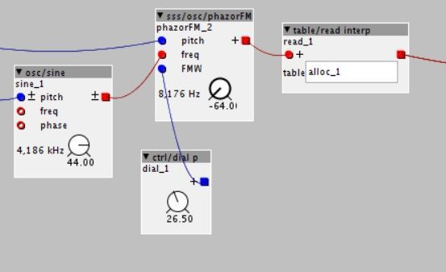

Hi!
Unfortunately I don't have any programing knowledge, only managed to add some inlets and outlets on objects so far. So maybe this is beyond my scope, but I figured I could try.
After reading this thread I noticed that FM (PM) of sample playback sounds nicest when I use these objects:

It seems much more subtle and useable than when using the FM inlet of sss/table/samplePlayer for example. I have to tune the phazorFM object to -64 to hear the whole sample though and it loops all the time. I could add a vca and an envolope that gets shorter when pitch gets higher, but it would be difficult and I'd still have to add phase reset somehow.
I think better would be to make it only play one cycle when triggered - how would I go about this? Maybe @SirSickSik can help?
K-rate code:
uint32_t freq;
MTOFEXTENDED(param_pitch + inlet_pitch,freq);
This thread suggests that this has something to with pitch correlated phase increments (whatever that is).
S-rate code:
int32_t FM=___SMMUL(inlet _freq<<3,freq<<4);
FM=___SMMUL(FM<<3,inlet _FMW<<2);
Phase += freq + FM;
outlet_phasor = Phase>>5;
[I had to add a blanks between "inlet" and "_" as it wouldn't show correctly otherwise]
So as far as I understand (and this thread explained a bit) it does the ___SMMUL [or x*y/(2^32)] thing twice with bit-shifted values to get the FM going and attenuate it with the FMW inlet and then adds the FM value to "freq". Does "freq" rise linearly because of the k-rate code? Can I just set Phase = 0 with "if" on a rising edge of a boolean inlet to reset the phase? And what is the maximum value, so I can make it stop after reaching that?
Thanks for any advice!